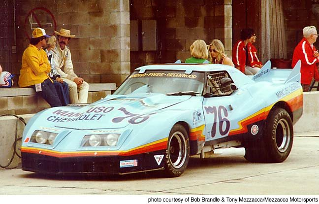
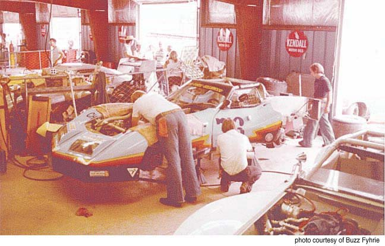
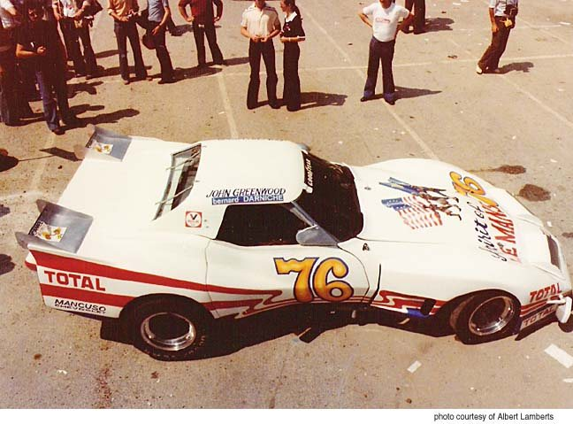
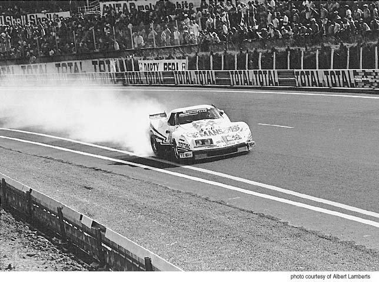
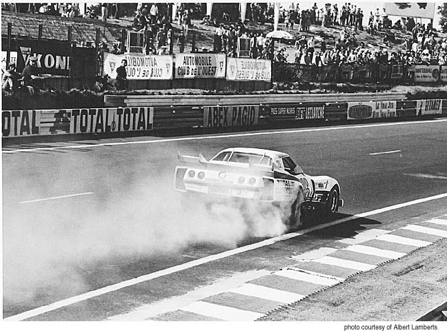
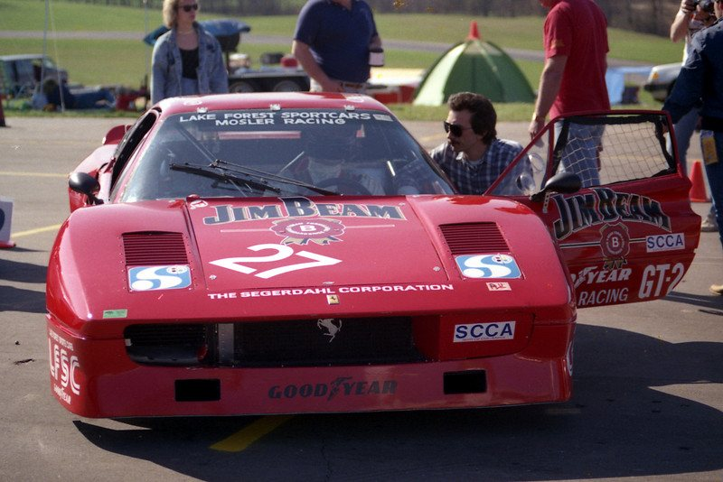
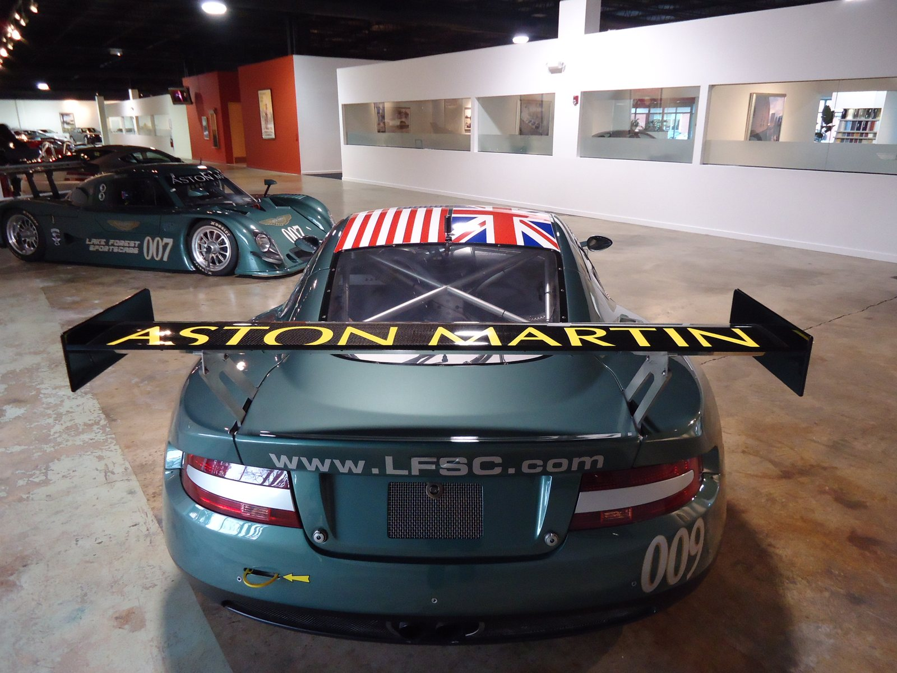

Lake Forest Sports Cars The Mancuso family. In the automobile business since 1923.
Next comes the GT — a tribute to the iconic Chevrolet Corvette, launching soon.
Le Mans, June 1976 — one chapter of the family story.
1923 — It began with Benjamin Mancuso, a pioneer dealer in Batavia, New York.
He founded the family's automobile business in 1923. Over the decades that followed it operated from numerous locations, as a dealership for:
1953 — His son Jim opens Mancuso Chevrolet in Skokie, Illinois.
Jim was also an avid road rallyer, a regular in a Great Lakes version of Italy's Mille Miglia — the first sign of the racing that would follow.
Source: Fra Noi, “Andrettis' heirs”, February 2005.


1972 — Jim's son Rick takes the dealership racing.
Rick Mancuso took the green flag in 1972, in a 1958 Corvette prepared to B-Production specs. By 1976 Mancuso Chevrolet had its own Corvette on track — the pale-blue #76, by the Revell kit's account the first “customer” car John Greenwood built.





June 1976 — An invitation to Le Mans.
For America's bicentennial the French government invited Mancuso and his team to race a Corvette at Le Mans. Rick stayed home to run the business and turned the Greenwood wide-body Corvette over to his teammates. Fra Noi records 218 mph on the Mulsanne Straight — the fastest entry on the course — before a fuel malfunction ended its race in the eighth hour.


218 mph. On the Mulsanne Straight — the fastest entry on the course. Fra Noi, February 2005.



Lake Forest Sports Cars.
Rick became president and CEO of Lake Forest Sports Cars, the family's dealership for premium imports including Ferrari, Maserati and Aston Martin. He raced — a Ferrari BB512LM, 308 GTB, 348, 355 and F40, a Maserati Bi-Turbo SSGT, a Mosler Consulier GTP — in endurance races at Sebring, Daytona, Mid-Ohio and Nelson Ledges. His brother Rob was crowned 1986 SCCA Midwest Council champion.
Source: Fra Noi, February 2005. Brands as of 2005; current line-up to be confirmed.



Father and son, in Aston Martin racing green.
Rick's son Adam started driving go-karts at 12 and trained at the Skip Barber Racing School at Road America. In the 2000s father and son raced custom Lola Sports Racers in SCCA competition, painted Aston Martin racing green — and carrying the family crest on the nose.
Source: Fra Noi, February 2005.


By Mancuso —
an automotive family since 1923.
The GT.
Launching soon
A tribute to the iconic Chevrolet Corvette — the authenticity and style of original Corvettes, with modern comfort and driveability. Only by Mancuso.
Ask about the GT Watch “Introducing the GT” · 2:19
- Specification
- To be announced
- Photography
- To be announced
- Source
- “Introducing the GT”, Mancuso, July 2026
AM 560 The Answer · Chicago
RPM Club, with Rick and Rob Mancuso.
A weekly radio show that celebrates the love of cars and the joy of driving — the business and the pleasure of all things automotive, with industry guests and callers.
Episodes from the show's public feed, 16 Oct 2026 — the live site will update from the feed.
The family's latest posts will appear here once the account is connected.
Account handle To be confirmed
Get in touch.
About the GT, the family's cars, or anything else.
- Address
- To be confirmed
- Phone
- To be confirmed
- To be confirmed